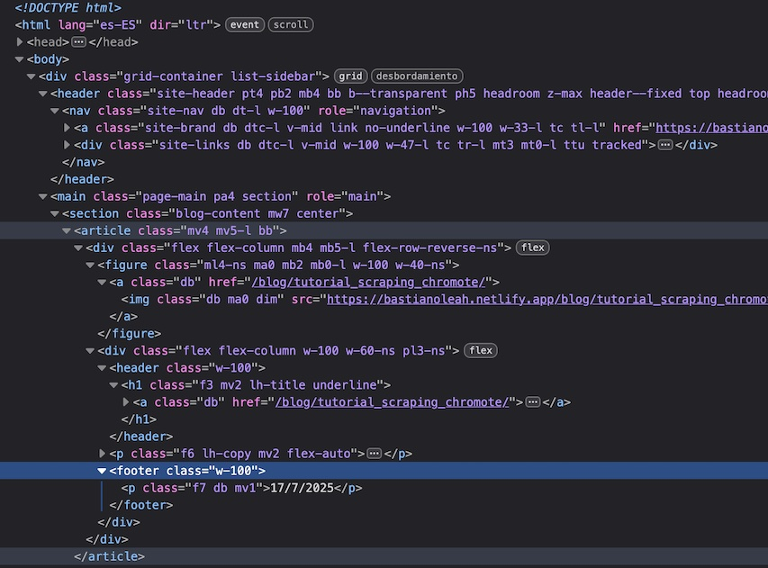

Web scraping con R
17/7/2025

Se denomina web scraping al conjunto de técnicas que permiten extraer datos e información alojada en páginas web, usualmente en formatos que no son fácilmente convertibles a tablas de datos.
Al ser R un lenguaje enfocado completamente el análisis de datos, es la plataforma ideal para este tipo de tareas, dado que puedes usar un sólo lenguaje para controlar las herramientas de extracción de datos, programar la lógica para automatizar la extracción, procesar y limpiar los datos, y finalmente analizar y presentar tus resultados.
A continuación, te presento tres formas distintas de extraer datos desde páginas web con R. Cada una tiene sus ventajas y desventajas, y están acompañadas de un tutorial en el que le explico desde cero a utilizarlas.
{rvest}
{rvest} es uno de los paquetes principales y más usados para extraer datos desde internet. Como forma parte del
Tidyverse, su sintaxis es muy intuitiva y coincide con el flujo de trabajo de la mayoría de usuarios/as de R. Además de ser una forma sencilla de acercarse al web scraping, contiene funciones para interpretar el código HTML obtenido, lo cual lo vuelve una herramienta versátil que también sirve a la par de otras herramientas de web scraping.
Sirve para la mayoría de los sitios web, pero presenta dificultades con sitios web dinámicos.
{RSelenium}
Selenium es un software de automatización y testeo de sitios web bastante popular y muy usado. Por esta misma razón, puede ser una de las herramientas de web scraping para la que sea más fácil encontrar recursos, consejos y asistencia online.
Su fuerte está en la capacidad de controlar distintos navegadores, como Firefox y Chrome, incluso ayudándote con la instalación, u operando desde contendores Docker.
{chromote}
Con este paquete se puede controlar una instancia sin interfaz gráfica de Google Chrome. Hoy en día, cuando este navegador ha monopolizado gran parte del internet, puede ser conveniente utilizarlo para la extracción de datos web. También te permite controlar el navegador de forma gráfica, y una de sus fortalezas es que es más difícil de detectar como un web scraper por los sitios web.
Ejemplos de web scraping con R
-
Web scraping de datos electorales desde Servel (Chile), automatizando el control de varios botones y selectores, con
{RSelenium} -
Web scraping de varios sitios del Banco Central usando
{rvest}, automatizado de forma recurrente con GitHub Actions -
Web scraping de perfiles de GitHub con
{rvest}para generar tablas de los repositorios -
Ejemplo de web scraping de noticias con
{rvest} -
Ejemplo de web scraping de un sitio web de Transparencia Activa (Chile) con
{RSelenium} -
Obtención automatizada y masiva de datos de prensa con
{rvest}y{chromote}para sitios que bloquean el acceso -
Extracción de una tabla de Wikipedia con
{rvest} -
Ejemplo de extracción de una tabla del Banco Central con
{rvest} -
Descarga de múltiples archivos en una página web con
{rvest}
Publicaciones sobre web scraping